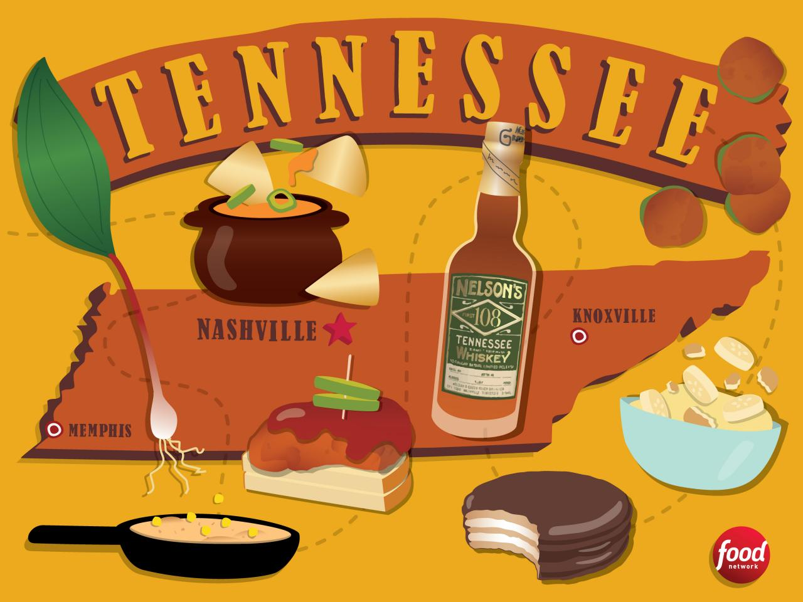

Welcome to TN
Welcome to FoodieLand! Here you will learn about the delicious dishes that makes the state of Tennessee so unique. From sweets to meats, FoodieLand has it all! You will also learn the history behind some of your favorite local restaurants ans snacks. As an added bonus, we took the liberty of adding reciepes of the foods mentioned since we know you'll be hungry after reading this. Click the buttons below for fun facts.
